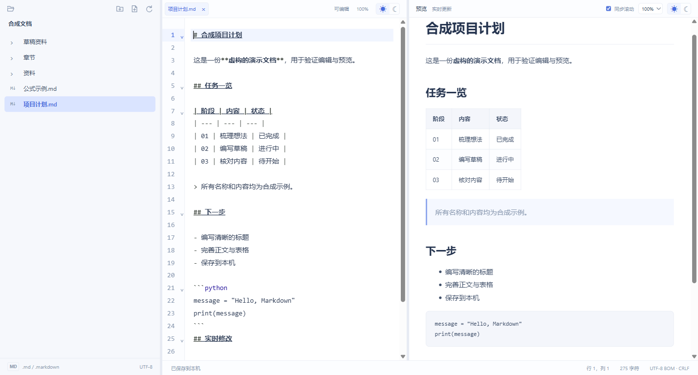

按文件夹整理
浏览本地目录，新建、重命名和移动 Markdown。多标签保留草稿与编辑位置，切换思路也能接着写。
An offline Markdown editor for Windows. Local files, multiple tabs, live preview and LaTeX math — without accounts or cloud services.

浏览本地目录，新建、重命名和移动 Markdown。多标签保留草稿与编辑位置，切换思路也能接着写。
CodeMirror 编辑，Markdown 即时预览。表格、任务列表和脚注直接呈现，两栏可独立缩放与切换明暗。
KaTeX 随应用打包，支持行内公式、矩阵、多行对齐和分段函数。安装后无需本地 Web 服务。
应用无账号、遥测、模型 API、云同步或联网下载更新。
保留 UTF-8 BOM 与 LF/CRLF，检测外部修改；关闭标签、切换目录和退出时处理未保存内容。
文档 HTML 不执行，图片显示占位，外部链接不可导航；预览仅加载应用内置资源。
Windows x64
Node.js 22.12+ 与 npm
当前版本 0.6.1。尚未发布二进制 Release，先从源码运行；也可以在本机生成安装包。安装后的应用不需要 Node.js 或 Python。
查看源码与完整构建说明 ↗git clone https://github.com/ai-v5/LLMMarkUp.git
Set-Location LLMMarkUp
npm ci
npm start
# 生成 Windows 安装包
npm run dist支持不超过 2 MiB 的 UTF-8 文档。尚未支持图片预览、Mermaid、崩溃草稿恢复或多人协作；异常退出可能丢失未保存内容。安装包未签名。文件操作不提供多写入者事务保证，避免多个程序同时修改同一文件。查看全部边界 →
项目自有代码与原创图标采用 AGPL-3.0-only，第三方组件保留各自许可。发现体验问题，可以带着合成复现样例提交 Issue；也欢迎范围明确的 PR。